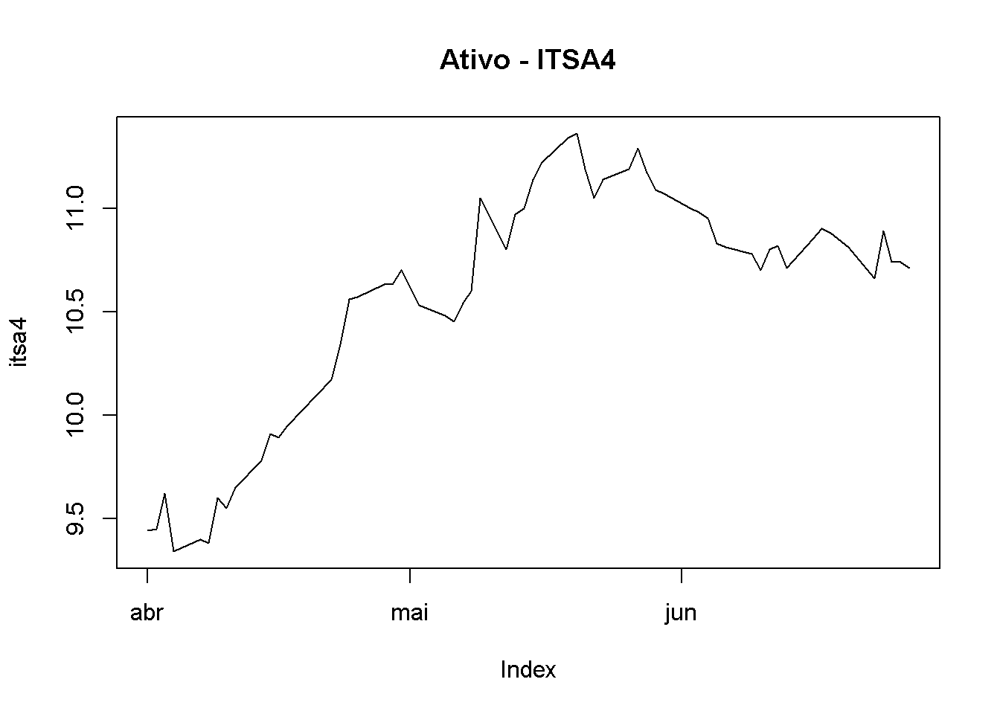
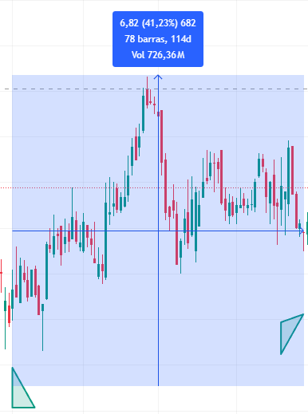
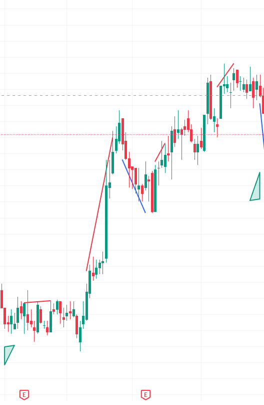

Nesta etapa, foi realizada uma análise dos preços de fechamento dos ativos no período de 01/04/2025 a 27/06/2025, com o objetivo de compreender a dinâmica histórica e apoiar decisões futuras de investimento. A partir da estratégia buy and hold e do referencial teórico de benchmark, foram identificados:
O preço inicial e preço final da série
O menor e o maior valor registrado no período,
E a variação percentual teórica entre esses pontos, representando o potencial de crescimento ou retração do ativo.
Esses indicadores permitem observar a trajetória dos ativos e avaliar sua performance em termos de risco e retorno. O intuito é entender o comportamento passado para operar de forma mais estratégica no futuro.
Os dados utilizados foram carregados via script, considerando todos os ativos da carteira em análise.
library(tseries)
Registered S3 method overwritten by 'quantmod':
method from
as.zoo.data.frame zoo
# Datas de início e fimdataini <-as.Date("2025-04-01")datafim <-as.Date("2025-06-28")# Baixando os dados dos 5 ativoslwsa3 <-get.hist.quote("lwsa3.sa", quote ="Close", start = dataini, end = datafim)
time series ends 2025-06-27
elet6 <-get.hist.quote("elet6.sa", quote ="Close", start = dataini, end = datafim)
time series ends 2025-06-27
itsa4 <-get.hist.quote("itsa4.sa", quote ="Close", start = dataini, end = datafim)
time series ends 2025-06-27
rent3 <-get.hist.quote("rent3.sa", quote ="Close", start = dataini, end = datafim)
time series ends 2025-06-27
brfs3 <-get.hist.quote("brfs3.sa", quote ="Close", start = dataini, end = datafim)
time series ends 2025-06-27
# Removendo valores ausenteslwsa3 <-na.omit(lwsa3)elet6 <-na.omit(elet6)itsa4 <-na.omit(itsa4)rent3 <-na.omit(rent3)brfs3 <-na.omit(brfs3)# Verificando quantidade de observações e visualizando os dadoslength(lwsa3); plot(lwsa3, main ="Ativo - LWSA3")
[1] 60
length(elet6); plot(elet6, main ="Ativo - ELET6")
[1] 60
length(itsa4); plot(itsa4, main ="Ativo - ITSA4")
[1] 60

length(rent3); plot(rent3, main ="Ativo - RET3")
[1] 60
length(brfs3); plot(brfs3, main ="Ativo - BRFS3")
[1] 60
Gráficos Seguindo a Estratégia Buy and Hold:
A ITSA4 valorizou 35,68% (R$2,99), com um volume impressionante de R$2,56 bilhões, o maior da lista. Esse movimento reflete uma alta sustentada , ideal para estratégias de buy and hold. A consistência no volume e na valorização indica confiança do mercado.
O ativo BRFS3 apresentou uma valorização de 41,23% (R$6,82) no período analisado, com volume negociado de R$726,36 milhões. Esse desempenho, aliado ao volume significativo, indica uma tendência de alta , sugerindo forte interesse do mercado.

Com uma valorização de 21,31% (R$8,52) e volume de R$114,55 milhões, o ELET6 teve o desempenho mais modesto entre os ativos analisados. O baixo volume relativo sugere menor participação do mercado, mas ainda assim manteve uma trajetória positiva. Pode ser um ativo mais estável.
Com valorização de 56,87% (R$14,55) e volume de R$806,45 milhões, a RENT3 mostrou um equilíbrio entre crescimento e liquidez. O bom desempenho , indica uma tendência de alta bem sustentada, com participação ativa do mercado.
Destaque absoluto, a LWSA3 subiu 85,54% (R$1,99) em 119 dias, com volume de R$797,36 milhões. Esse crescimento explosivo, quase o dobro dos demais ativos, sugere um momento excepcional, possivelmente impulsionado por fatores setoriais ou notícias específicas. Quem comprou e segurou obteve retornos extraordinários, mas a alta volatilidade exige atenção.
Estratégia Teórica do preço máximo e mínimo:
Ativo Brfs3: analisando a estratégia de buy and hold , a teórica de máximos e mínimos juntamento com o volume em ambas conseguimo verificar que de fato há uma tedencia de alta que buscaremos na teoria de dow validar.
Ativo Elet6: analisando as estratégia de buy and hold , a teórica de máximos e mínimos juntamento com o volume verificamos que menteve um volume relativo baixo indicando ser um ativo mais modesto
Ativo Itsa4: analisando as estratégia de buy and hold , a teórica de máximos e mínimos juntamento com o volume verificamos que ouve o aumento volume nos mostra que os investidores tem espectativas nesse ativo, mas há um ponto a se observar a zona de resistência.
Ativo Rent3: analisando as estratégias de buy and hold , a teórica de máximos e mínimos juntamente com o volume verificamos que houve um diferença significativa no volume entre as duas estratégias ,mas devemos observar as possíveis áreas de resistências ao irmos para a teoria de dow
Ativo Lwsa3: analisando as estraégias de buy and hold , a teorica de máximos e mínimos juntamento com o volume verificamos que mesmo com o volume alto precisamos de atenção para as regiões de resistências
Análise do ativo BRFS3:
Análise do ativo ELET6 :
Análise do ativo ITSA6:
Análise do ativo RENT3:
Análise do ativo LWSA3:

Indicadores Médias Moveis e Desvio padrão:
l
library(tseries)# Datas de início e fimdataini <-as.Date("2025-04-01")datafim <-as.Date("2025-06-28")# Vetor com os tickerstickers <-c("lwsa3.sa", "elet6.sa", "itsa4.sa", "rent3.sa", "brfs3.sa")# Lista para armazenar os preços históricosprecos <-list()# Baixando os dados e removendo NAsfor (ticker in tickers) { serie <-get.hist.quote(ticker, quote ="Close", start = dataini, end = datafim) serie <-na.omit(serie) precos[[ticker]] <- serie}
time series ends 2025-06-27
time series ends 2025-06-27
time series ends 2025-06-27
time series ends 2025-06-27
time series ends 2025-06-27
# Função para calcular média e desvio padrãoestatisticas <-lapply(precos, function(x) {c(Media =mean(x), DesvioPadrao =sd(x))})# Exibindo resultadosestatisticas
$lwsa3.sa
Media DesvioPadrao
3.6225000 0.4607533
$elet6.sa
Media DesvioPadrao
46.030667 1.262844
$itsa4.sa
Media DesvioPadrao
10.5798333 0.5732172
$rent3.sa
Media DesvioPadrao
41.416000 2.578418
$brfs3.sa
Media DesvioPadrao
20.7445001 0.8725833
# Calcular os retornos logarítmicosretornos <-lapply(precos, function(x) { retorno <-diff(log(x))na.omit(retorno)})# Visualizando os retornos de cada ativoretornos
# Valores a testarvalores <-c(34.875, 38, 32, 33, 37.13255, 39, 41)# Lista para guardar as probabilidades por ativoprobabilidades <-lapply(tickers, function(ticker) { media <-mean(precos[[ticker]]) desvio <-sd(precos[[ticker]])# Calcula pnorm para cada valor probs <-sapply(valores, function(v) pnorm(v, mean = media, sd = desvio, lower.tail =TRUE))return(probs)})# Transformar em data frameprob_df <-do.call(rbind, probabilidades)rownames(prob_df) <-toupper(tickers)colnames(prob_df) <-paste0("P(X ≤ ", valores, ")")# Exibir com duas casas decimaisround(prob_df, 4)